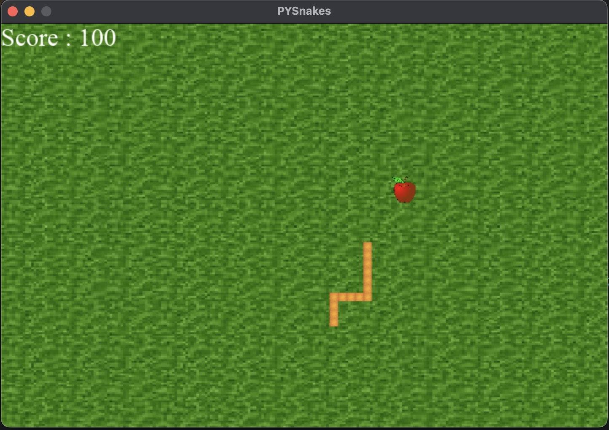
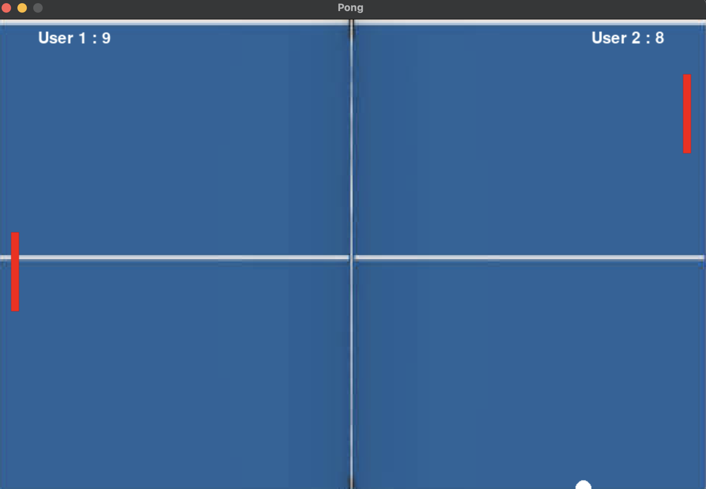

PySnake

In this project, I developed a
Python-based
snake game, focusing on responsive player controls through event handling and collision detection to manage game mechanics. I also emphasized
dynamic object creation
for the snake's growth, showcasing my skills in
data manipulation
.
PyPaint
In this project, I created a
Python-based
interactive whiteboard app with a focus on
user experiance
and
interface design (UX/UI)
.The app features advanced mouse event handling, allowing users to draw seamlessly on the canvas. It includes dynamic UI elements like tool selection and customizable settings, enhancing user interaction.

In this project, I developed a Pong game using
Python
, emphasizing
user interface design
, responsive event handling for paddle control, and collision detection between the ball and paddles. This approach enhanced
player interaction and game realism
, showcasing key aspects of Python-based development.